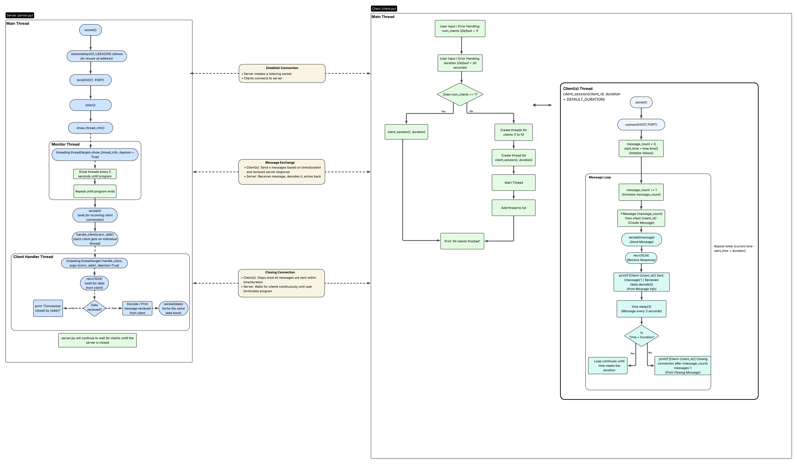

Python Project
Client Server Communication
Overview
Developed a client-server communication application using Python to demonstrate interprocess communication and concurrent server management. The project implements socket-based communication between clients and servers while utilizing multithreading to support multiple simultaneous client connections. Linux tools such as top were used to monitor thread activity and analyze system behavior.
Source Code
View the project repository for the Python source files and implementation details.
Technologies Used
- Operating Systems: Windows 11, Windows Subsystem for Linux (WSL)
- Programming: Python, Socket Programming, Threading Module, Multi-threading, Thread Synchronization (Mutex Locks)
- Networking: Client-Server Architecture, Interprocess Communication (IPC)
- System Tools: Linux Command Line, top (Process Monitoring), strace (System Call Analysis)
Architecture Diagram
The following diagram illustrates the model of the two programs:

Video Demonstration
Watch a demonstration of the client-server application in action.
Project Documentation
The following provides additional details about the project: